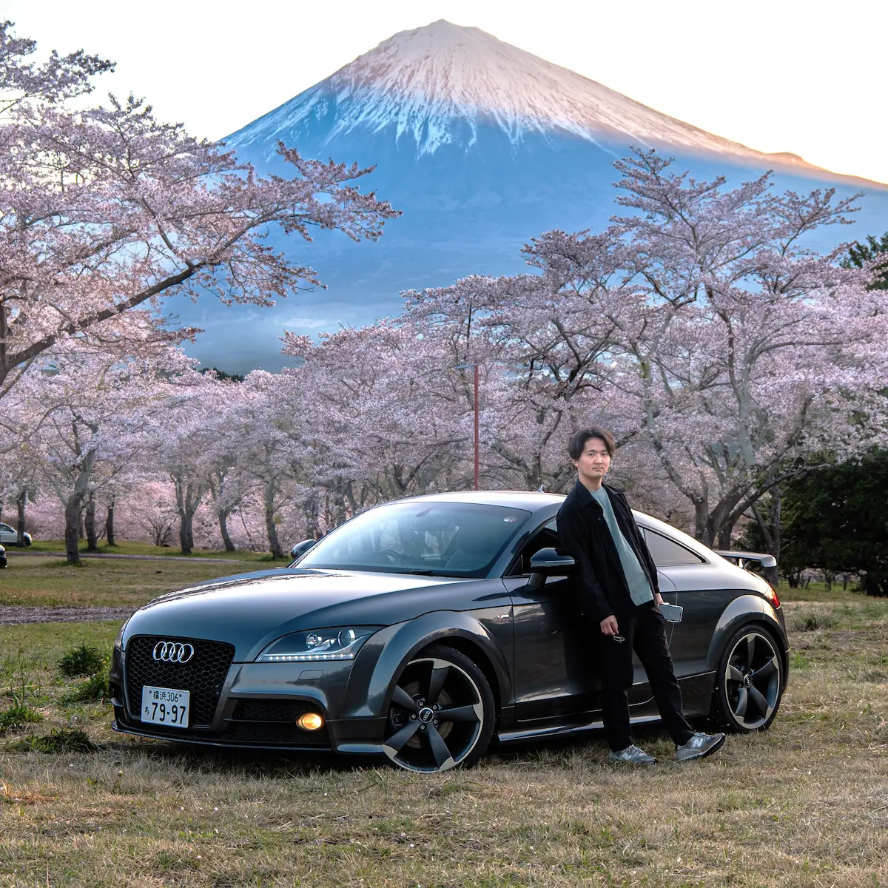

Hello, I'm
Frontend Engineer
デザインとユーザー視点を大切に、
分かりやすく使いやすい画面づくりを目指しています。

| 氏名 | 山崎 尚登 |
|---|---|
| 年齢 | 25歳 |
| 所在地 | 神奈川県 |
| 希望職種 | フロントエンドエンジニア |
| Web経験 | 研修・実務を含め約1年半 |
| 趣味 | 写真、車、オーディオ、将棋など |
実務で使用しました。 レスポンシブ対応や、既存LPの修正経験があります。
主に研修で使用しました。 DOM操作やイベント処理、簡単なアニメーションの実装経験があります。
Wikiアプリの制作を通して、CRUD機能やReact Router、 状態管理、API通信などを学習しました。
ソースコードのバージョン管理に使用しています。 コミットやブランチ作成など、基本的な操作を行えます。
研修で基礎を学習しました。 SELECT、INSERT、UPDATE、DELETEなどの基本操作を経験しています。
写真の切り抜きや合成などに使用しております。
大学での制作物のデザインボード制作や、 グラフィック制作に使用しました。
主にRAW現像に使用しています。 複数の写真に統一感を持たせる調整も行っています。
私の強みは、現状に満足せず、「どうすればもっと良くなるか」を考えながら改善を積み重ねられることです。
大学ではデザイン工学を学び、利用者の視点で考える力を身につけました。 また、約90名が所属する写真部では部長として写真展の企画・運営に携わり、 周囲と協力しながらより良い展示づくりに取り組みました。
Webエンジニアとしては、研修受講後、大手クレジットカード会社のLP修正業務を担当し、 既存デザインやコードへの影響を考慮しながら、一つひとつ丁寧に対応してきました。 これまで培ってきた改善する姿勢とユーザー視点を活かし、 使いやすく価値のあるWebサービスづくりに貢献していきたいと考えています。
Webエンジニア
HTML、CSS、JavaScriptを使用し、 既存ランディングページの修正と表示確認を行いました。 既存デザインやコードへの影響を確認しながら、 指示内容に沿って対応しました。
Reactを使用したWikiアプリを制作しました。 記事の表示・作成・編集・削除などのCRUD機能に加え、 React Router、状態管理、API通信などを学習しました。
HTML、CSS、JavaScript、jQuery、React、Git、SQLなどを学習し、 課題制作を通じて画面実装、データ操作、 バージョン管理の基礎を身につけました。
レンタカー配車・接客業務（アルバイトとして勤務）
車両の配車、洗車、回送、接客などを担当しました。 限られた時間の中で優先順位を判断し、スタッフと連携しながら業務を進めました。 また、新人教育も担当いたしました。
中古輸入車販売
輸入車販売に関わる業務を経験しました。 カーセンサーや自社HPへの在庫車両掲載では、車両の特徴や状態を分かりやすく伝えることを意識しました。
デザイン工学・写真部活動
デザイン工学を学び、大学1年次には学科1位の成績を収めました。
卒業制作では自動運転シニアカーの外装をデザインし、意匠権を取得しました。
また、約90名が所属する写真部で部長を務め、写真展の企画・運営や作品制作に取り組みました。
学業や課外活動への取り組みが評価され、二種の育英奨学生に計三度、表彰されました。